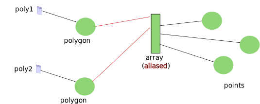
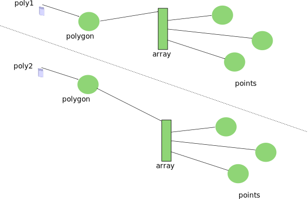

sprint=java.basics
task=t6
step=t6-s3
This second bug is an important one to track, understand, and fix.
If you have problems grasping what is going on, you must ask for help.
The bug is subtle, very common, and yet rarely discussed amongst developers.
It is also rarely discussed in coding courses, which, we think, is a mistake.
We know this will be a bit challenging for you, but we are confident that
you can grasp how aliasing is at the origin of the bug.
We already mentioned aliasing before, remember? Let's refresh our memory:
Le bug est subtile, très commun, et pourtant rarement discuté entre
développeurs et encore moins dans les cours de programmation.
Nous savons que ce bug sera un peu difficile pour vous, mais nous
sommes confiant que vous allez parfaitement comprendre comment
un manque de maîtrise de l'aliasing va être à la source du bug.
Point p1 = new Point();
Point p2 = new Point();
Point p3 = p2;
p3.translate(10,20);

Look at the variables p2 and
p3, they are aliasing
the same object. Remember that the assignment from p2 to p3 does not
copy the object, it copies the identity of the object.
This means that both variables refer to the same
object, an instance of the class Point.
So the translation applied to the object referenced by
p3 can be seen on the object referenced by
p2. Of course, it can, they are the same object.
C'est un rappel et vous avez encore besoin de la traduction...
Il faut commencer à améliorer votre anglais. Profitez en.
Au fur et à mesure, nous traduirons de moins en moins...
Aliasing is not a de facto flaw in a design, in fact,
aliasing is a natural phenomenon
that cannot be avoided most of the time. Yet, aliasing must be understood
precisely. You must understand how objects are aliased throughout the object
graph your program creates.
Otherwise, you may be believing that you are modifying two objects
while in fact you are modifying the same object. Or the reverse situation,
you may think that an object is aliased where in fact you have two objects.
So for instance, in the code above, the translation of
p3 would in fact
also translate p2,
since p2 and p3
are referencing the same object.
Les alias ne sont ni mauvais ni bons, comme nous l'avons déjà dit.
Par contre, il faut savoir maitriser les alias. Sinon, vous
pouvez croire que vous modifiez deux objets alors que c'est le même,
ou bien penser modifier un alias d'un objet alors que vous avez
en réalité deux objets. Ainsi, dans le code ci-dessus, la translation
de p3 fait aussi la translation
de p2 puisque
p2 et p3
référence le même objet.
This is exactly the problem with the code that we gave you: there is some
unwanted aliasing going on. Remember that we discussed that a polygon is
a graph of objects; a graph that includes a polygon object, an array object,
and point objects.
If two polygons are sharing either their array object or point objects,
changing one polygon would affect the other and the other way around.
This is not what we expect here, we expect each polygon to be an independent
entity.
C'est exactement un problème similaire dans le code que nous vous avons
donné: il y a un aliasing non voulu. Vous vous rappelez qu'un polygon
est un graphe de plusieurs objets qui inclue le polygon, le tableau,
et les points. Si les graphes de deux polygones partagent des objets,
changer l'un des polygones va affecter le second.
Notice that it is possible that in other contexts, aliasing between
polygons could be desired. For instance, some mesh representation of
3D objects might want that polygons share points, because polygons
form a contiguous surface.
But in the code we gave you, we want polygons to be independent entities.
Notez qu'il est possible que dans d'autres contexte, on souhaite
faire de l'aliasing entre polygones. Par exemple, des représentations
non structurées d'objets 3D pourraient bénéficier de la capacité
de partager des points. Mais dans le code que nous vous avons donné,
nous voulons que les polygones soient des objets indépendants.
Please find the aliasing between the two polygons reachable from
the static variables poly1 and
poly2.
Veuillez trouver l'aliasing non-voulu entre les polygons
référencés par les variables statiques
poly1 et
poly2.
With that in mind, happy hunting... but let us give you a last advice.
Draw the object graph on a piece of paper, like we did earlier to show
that a polygon was in fact a small graph of objects. Reuse this approach,
when reading the code we gave you... Soon you shall see what we have done
wrong, with the help of the debugger.
Avec cela en tête, foncez... mais suivez un dernier conseil,
dessinez le graphe d'objets sur un papier, comme nous l'avons fait
précédemment pour voir qu'un polygone est en fait un petit graphe d'objets.
Réutilisez cette méthode lorsque vous lisez du code. Vous verrez très vite
ce qui est erroné dans ce code, avec l'aide du debugger.
May the force be with you....
Fixed?
If the check complains about the aliasing still being there,
look closely at how poly1 and
poly2 are sharing their array
of points. Do you think it is an aliasing by design or a bug?
You did fix it.
Well done.
So you figured out the aliasing of the array of points, between
poly1 and
poly2.
If you draw it on a piece of paper, you should have drawn something
like this:

The unwanted aliasing is depicted by the red arrows, showing that
two polygons are sharing the array of points. There is nothing
fundamentally or intinsically wrong there. It is just that we
wanted polygons without any aliasing, that is, an object graph
that would look like this:
L'aliasing non-voulu est montré par les flèches rouges,
montrant que les deux polygones partagent en fait leur
tableau de points. Il n'y a rien de fondamentalement
ou intrinsèquement faux ici, c'est juste que nous voulons
des polygones sans partages d'objets. Nous voulions ceci:

Let's look back at the mistake we introduced in the code.
It was a small mistake, just forgetting to re-allocate an array.
Something easy to do and oversee.
Yet, it was a big mistake because it resulted in an incorrect
object graph. Worse, it resulted in a program than did not
crash, it ran, but it didn't do what it was supposed to do.
Look at the code below that summarizes the key four lines:
Regardez l'erreur, elle était toute petite et facile à faire,
juste oublier de ré-allouer un tableau. Quelque chose de
facile à faire et difficile à voir après coup.
Mais en fait cette petite erreur a de grosses conséquences.
Les polygones n'ont pas été construit correctement. Mais plus
grave, le programme tournait mais ne faisait pas ce qu'il fallait.
Le code ci-dessous montre les quatre lignes clés:
Point points[];
points = new Point[4];
...
p1 = new Polygon(points);
points = new Point[4];
...
p2 = new Polygon(points);
Now we know that we needed to allocate two arrays, one for each polygon.
But this is nothing obvious, it all depends on the design of the
constructor of the class Polygon.
And this is exactly the point we are making, the developer
who wrote the class Polygon
must decide and he must communicate his design in the comments
of the constructor.
Maintenant nous savons qu'il faut allouer deux tableaux, un par
polygone. Mais ce n'était pas évident, tout dépend de la sémantique
du constructeur de la classe Polygon.
Et c'est exactement le point sur lequel nous voulons insister.
Le développeur qui écrit le constructeur doit décider et doit
documenter le comportement. Le commentaire du constructeur doit
préciser si le constructeur fait une copie du tableau ou si le
tableau passé en paramêtre est aliasé.
As a developer using the
class Polygon,
your responsability is to go read the comments of the constructor.
If they are missing or unclear, and it will be often the case,
go read the implementation if
the source is available. If it is not available, try writing some tests
to determine the design that was used.
En tant que développeur utilisant la classe
class Polygon,
il est de votre responsabilité de rechercher la sémantique.
Si ce n'est pas écrit dans le commentaire (et cela le sera
rarement), aller regarder le source. Si le source n'est pas
disponible, faite de petits tests pour déterminer le comportement.
The key question is the following: is the Polygon constructor making a
copy of the array given as an argument or is the constructor aliasing
that array? In the code we gave you, the array is aliased and so
a new array must be allocated for each polygon. This is a key question
when coding, in Java or in C or in almost all programming languages.
La question que vous devez vous poser est la suivante:
est-ce que le constructeur d'un polygone fait une copie du
tableau passé en paramêtre ou non. Si il ne fait pas une copie,
le tableau sera référencé depuis le polygon. Dans le code que nous
vous avons donné, le tableau n'est pas copié et il faut donc créé
un tableau pour chaque polygon. Cette question est très importante,
en Java, en C, et dans presque tous les langages de programmation.
Mastering aliasing is an integral part of being a good developer..